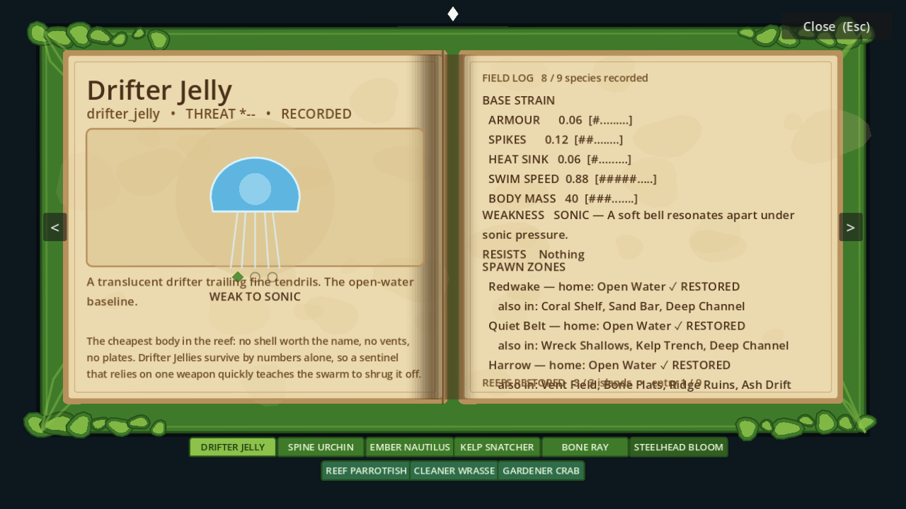
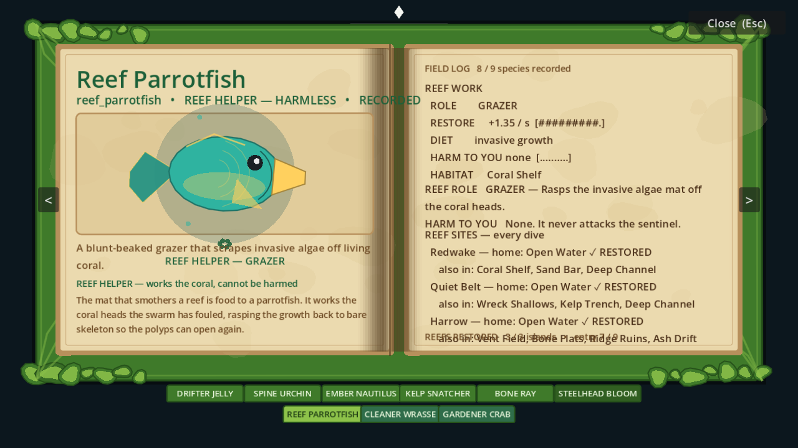
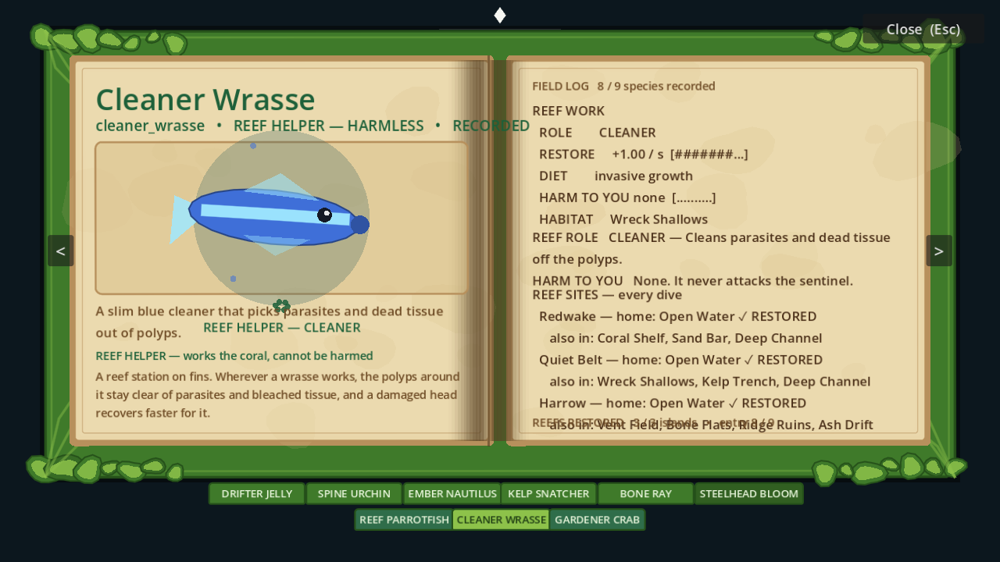
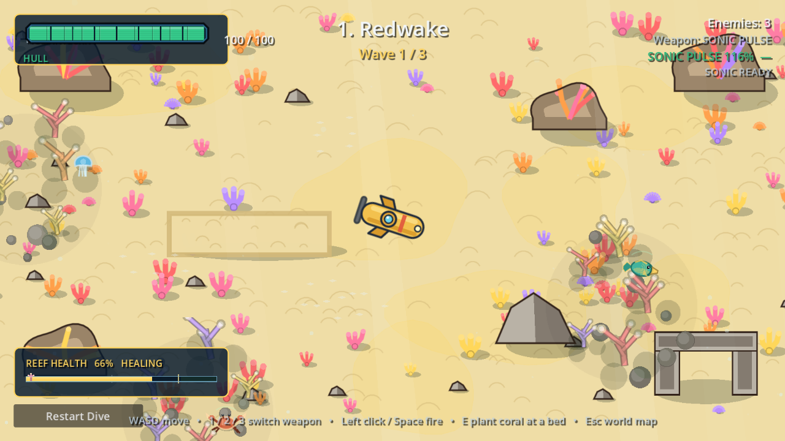
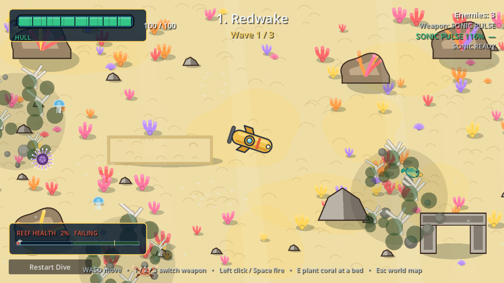
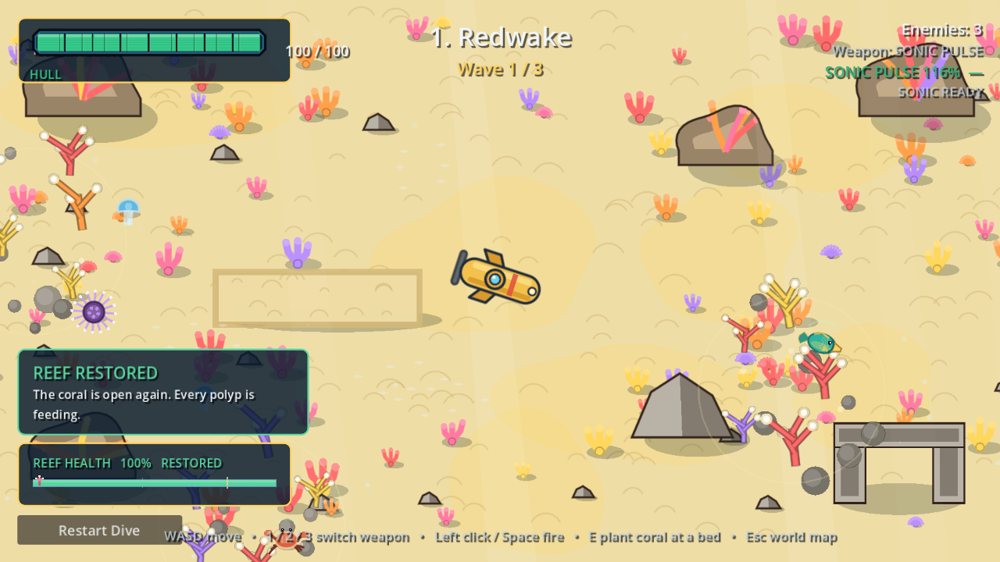
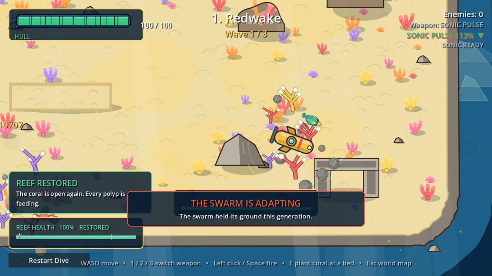
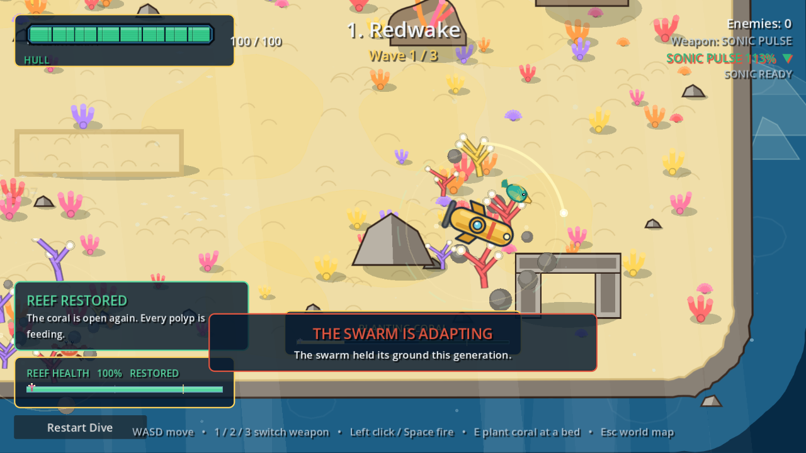
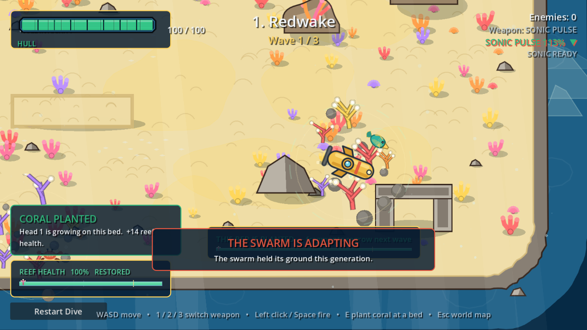

Produced by tools/verify_ui.gd (windowed render pass, 1152×648). Every image is a real frame of the game, not a mock-up.
Open this file directly in a browser — the game project lives outside this workspace, so nothing here is served.
01 — World map. Three reef islands cleared and unlocked, two still locked; the sentinel sits on the route.

02 — Guidebook. A full-screen, opaque book now: coral-green cover frame, parchment pages with stains and a shaded gutter, white diamond ornament. Left page: species name, threat pips, portrait and field notes. Right page: the stat block, weakness, resistances and spawn zones, all read from the same species table the enemies use. The map behind it is completely covered — the old overlay drew no book at all, so its labels floated over the ocean.

03 — Guidebook, reef helper entry. The friendly species get their own entries in the same format: reef role, restore rate per second, and the promise that they are harmless. The tab row under the invaders leads to them.

04 — Guidebook, last entry. Page navigation, the field-log counter and the reefs-restored tally. Nine entries, all named and detailed whether or not the player has met them.05 — Harrow, wave in progress. Volcanic-vent biome, obstacles, hull bar, weapon readout, effectiveness dial.05b — Between-wave adaptation banner. Names the traits that moved this generation and what it means for the equipped weapon.06 — Critical hull. Segmented hull bar in the red, with the screen-edge damage vignette.07 — Bubble Dome deployed. The defensive tool in action: it roots what swims into it and absorbs hits.08 — Thermal Beam. Sustained beam with the heat dial; the beam is the burst weapon with an overheat cost.09 — Twelve invasives on screen. Distinct species art, wound tint, spikes grown by the evolved traits.10 — Redwake. Shallow reef: open sand, coral bombies, bright water. The first island, two species.11 — Quiet Belt. Kelp belt: green palettes, kelp cover, a wreck, four species.12 — Harrow. Volcanic vents: dark rock, ember drift and geysers, the full six-species roster.

13 — The reef component, mid-dive. Coral beds with a friendly species working them, and the REEF HEALTH meter bottom-left (with the mark showing where this island's reef started).

14 — Bleached. The same beds with the reef at zero: bone-white skeleton, polyps gone, an algae mat over everything. Forcing the reef to 0 in the harness is how the comparison below is made honest.

15 — Restored. The same beds at full health: warm, saturated coral with open polyps and a glow. Measured across the three beds, the coral's mean red-green warmth goes from 0.034 bleached to 0.093 restored.

16 — Planting, ready. The lull after a wave: the sentinel parked on a coral bed, a dashed ready ring drawn around the bed, and the HOLD E TO PLANT CORAL prompt with its bar. This state only exists once the wave is over and the water is empty — a momentary gap between two spawns of a live wave leaves the prompt hidden, and holding the key through one plants nothing.

17 — Planting. Mid-hold: the arc sweeps around the bed's rim as the 1.6 s channel runs, and the prompt bar fills with it. The bar and the ring are drawn in code in scenes/levels/reef_site.gd.

18 — Planted. The head landed: a burst on the bed, a real new coral head on the colony, and the confirmation CORAL PLANTED — Head 1 is growing on this bed. +14 reef health. The harness reads the bed's own head count before and after, so the coral growing is measured, not assumed.